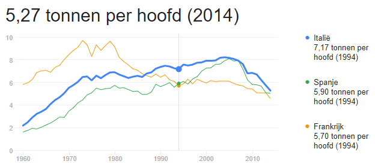

Italïe ligt in de zuiden van Europa. Er wonen daar 63 miljoen mensen. Rome is de hoofdstad ervan.

Hieronder is er een schema te zien van het aantal CO2 uitstoot per persoon in Italië.(ongeveer)

Zoals er te zien is, is er klein beetje minder CO2 uitstoot in Italië dan in Bulgarije.
Hierbij is er ook een duidelijke kaart over de relïëf van Italië:

Aan de hand van de leegenda kun je zien waar er rivieren zijn, en waar er gebergtes/vulkanen zijn.
Italiaanse samenleving

In Italië is het meestal druk buiten, maar mensen gaan niet twijfelen als iemand om hulp vraagt. En er zijn veel culturele evenementen in Italië. En er zijn veel toeristische plekken,
waar je een romantisch avondje kan hebben.